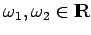

Inhalt Index DeskTop Bronstein

 Dynamische Systeme und Chaos Bifurkationstheorie, Wege zum Chaos Übergänge zum Chaos Auflösung eines Torus
Dynamische Systeme und Chaos Bifurkationstheorie, Wege zum Chaos Übergänge zum Chaos Auflösung eines Torus


Sei
eine ebene Differentialgleichung, in der f1 und f2 differenzierbare und 1-periodische Funktionen in beiden Argumenten sind. In diesem Fall definiert (17.45) einen Fluß, der auch als Fluß auf dem Torus T2 = S1 x S1 bezüglich und interpretiert werden kann. Ist für alle  , so besitzt (17.45) keine Ruhelage und ist äquivalent zur skalaren Differentialgleichung 1. Ordnung
, so besitzt (17.45) keine Ruhelage und ist äquivalent zur skalaren Differentialgleichung 1. Ordnung
Mit den Bezeichnungen  und läßt sich (17.46) als nichtautonome Differentialgleichung
und läßt sich (17.46) als nichtautonome Differentialgleichung
schreiben, deren rechte Seite 1-periodisch bezüglich t und x ist. Es sei  die Lösung von (17.47) mit Anfang x0 zur Zeit
die Lösung von (17.47) mit Anfang x0 zur Zeit  . Damit kann man (17.47) eine Abbildung zuordnen, die als geliftete Abbildung einer Abbildung gelten kann.
. Damit kann man (17.47) eine Abbildung zuordnen, die als geliftete Abbildung einer Abbildung gelten kann.
| Beispiel |
|
Seien  Konstanten und eine Differentialgleichung auf dem Torus, die für der skalaren Differentialgleichung |